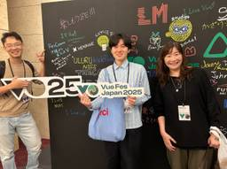
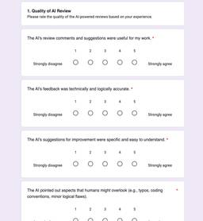
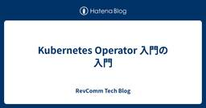
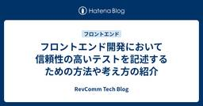

RevComm Tech Blog
https://tech.revcomm.co.jp/
コミュニケーションを再発明し 人が人を想う社会を創る
フィード
Vue 3 Composablesで肥大化コンポーネントをスリムにした話
RevComm Tech Blog
Vue 3 ComposablesとTypeScriptで肥大化したコンポーネントをリファクタリング。Nuxt 4で構築した大規模管理画面で、肥大化したコードを整理し再利用性を向上させた実装例。共通ロジックの分離方法から横展開まで実践的に解説。
2日前

ゆるーいペアプロ — チームの技術共有
RevComm Tech Blog
はじめまして。フロントエンドエンジニアをしている伊藤と申します。 この記事では、チームで週に1回開催しているペアプロという名の技術共有会について、お届けします。 技術共有の中身や始めたきっかけなどをお伝えできればと思っています。 目次 目次 ペアプロとは ゆるーいペアプロとは スケジュール 事前準備 活動内容 Vue Fes Japan 2025 composition 化観察 開発しているプロジェクトの実装相談 記事を紹介するなど技術共有 きっかけ まとめ ペアプロとは まず、記事の中身に触れる前に、本来のペアプロのやり方について記載します。 AI による説明は以下です。 「ペアプロ」とは、…
2日前

心理的安全性を高め、工数を減らす「校正者」としてのAIレビュー導入実践事例
RevComm Tech Blog
著者： Researchチーム 春日 1. はじめに 「レビューがいつまでも終わらない」「人によって指摘の粒度がバラバラ」「些細な指摘で心理的安全性が削られる」……。 開発規模の拡大や専門性が深まるにつれ、ドキュメントやコードのレビューにまつわる悩みは、どの現場でも尽きないテーマではないでしょうか。Bacchelliら*1の研究でも示されている通り、現代のレビューには単なる欠陥発見以上に「知識の共有」や「チームの認識合わせ」という高度な役割が期待されています。特に私たちResearchチームにおいては、プロジェクト完了後の最終レポート作成が重要な文化として定着しており、その際に質の高いドキュメ…
4日前

Kubernetes Operator 入門の入門
RevComm Tech Blog
RevComm Advent Calendar 2025 2日目です。 qiita.com AI Div. Research Group で機械学習のサービスの開発・運用(+MLOps)を行うチームでエンジニアリングマネージャーをしている高橋です。我々のチームは、EKSで音声解析や自然言語処理に関するサービスを提供したり、MLモデルの改善サイクルを回すための仕組みの構築を行っています。現在、あるプロジェクトでKubernetes の持つ宣言的定義でシンプルに管理しつつ、動的に状態を管理することができる Kubernetes Operator を活用して、推論プラットフォームを発展させる活動を行…
5日前

フロントエンド開発において信頼性の高いテストを記述するための方法や考え方の紹介 1
1
RevComm Tech Blog
はじめに RevComm Advent Calendar 2025 1日目の記事です。 qiita.com 昨今では AI コーディングエージェントが話題です。AI コーディングエージェントを活用することで、フロントエンド開発においても生産性の大きな改善が期待できます。 AI コーディングエージェントの活用を広めていくためには、信頼性の高いテストコードがあるとより積極的かつ安全に活用や導入を進めていきやすいのではないかと考えています。 そこで、この記事ではフロントエンド開発において信頼性の高いテストコードを記述するための方法論などについて説明できればと思います。 テストダブルの使用について 前…
6日前

PyCon JP 2025 In 広島 参加レポート （海外エンジニアとしての感想）🐍
RevComm Tech Blog
こんにちは、ホセです! 日本語と英語話せるエンジニアです。PyCon JPには初めて参加しました！ 本件はPyCon JP って何か、今年の気になったトーク、開発スプリントのテーマと個人感想を書かせていただきます！ 今年のテーマ PyConは、Pythonに関する世界最大級のカンファレンスであり、日本では2011年1月末には、品川シーサイドで日本初のPyConである「PyCon mini JP」が開催されて以来、これまで14年間にわたり東京で開催されてきました。 今年は「多様性」をテーマに、初めて広島で行われました！ 2025.pycon.jp 日程: 2025年9月26日（金）〜27日（土）…
2ヶ月前
Room Simulatorを用いたデータ拡張によるNeural Speaker Diarizationモデルの実環境適応
RevComm Tech Blog
RevCommで主に音声認識・音声感情認識・話者分離の研究開発を担当している石塚です。 本記事では、日本音響学会2025年秋季研究発表会で発表した「Room Simulatorを用いたデータ拡張によるNeural Speaker Diarizationモデルの実環境適応」の研究について、解説します。 石塚賢吉（いしづか けんきち） プリンシパルリサーチエンジニア。筑波大学大学院博士後期課程卒業。博士（工学）。日本HP株式会社にて通信事業者向けのシステム開発、株式会社ドワンゴで全文検索システムの開発などに従事。2019年12月、株式会社RevComm入社。音声認識、音声感情認識、全文検索シス…
2ヶ月前
PyCon JP 2025でRevCommのエンジニア1名が登壇します
RevComm Tech Blog
イベント概要 https://2025.pycon.jp/ja 公式サイトから引用 2025年、Pythonカンファレンス「PyCon JP」は、「あつまれPythonのピース」をテーマに、広島で開催されます。初の地方開催となる今回は、会場が平和記念公園内の国際会議場。平和を願い、発信し続けてきたこの地で、Pythonが大切にしてきた「多様性」や「オープンさ」を、あらためて感じられるイベントになるでしょう。 関東や遠方の方も、少し足を伸ばして、凛とした空気の平和公園で技術トークを楽しむ時間には、きっと特別な価値があります。 全国から集まる仲間たちと、コードの話も、これからの社会の話もちょっぴり…
2ヶ月前
テスト改善 --- Jest → Vitest に移行
RevComm Tech Blog
はじめに 基本知識・用語の確認 1. なぜ移行をしたのか 1.1 テストの実行時間がとにかく長い 1.2 Nuxt3移行に伴うビルド＆テスト環境の統一 1.3 テストコードの見直しが必要 2. Vitest を選んだ理由 2.1 手軽 2.2 フロントエンドロードマップの Testing に変化 2.3 Jest との互換性も問題なし 3. 実装 3.1 Vitest 1. Vitest をインストール 2. Vitest の設定ファイルを追加 3. Jest で記述されている箇所を、vi に変更する 4. テストで使用する環境変数の読み込み 5. エラーの解消 6. テストを成功させる 7.…
3ヶ月前
AWS Unicorn Day Tokyo 2025 に参加してきました！
RevComm Tech Blog
はじめに こんにちは、RevCommでエンジニアをしている加藤と申します。先日AWS Unicorn Day Tokyo 2025に参加してきました！今回はその中で特に印象に残ったセッションをお話ししたいと思います！ 会場の様子／全体の雰囲気 会場は原宿駅からほど近い東郷記念館というところでした。オフィスは渋谷にあるので朝早めにオフィスで仕事をしてから会場まで歩くことにしました。暑かったですが、青山通りを抜けて行く感じは気持ちが良かったです。 東郷記念館 外から バルコニーが綺麗 今年は AWS Summit Tokyo（幕張メッセ）や Google Cloud のイベント（Google 渋谷…
3ヶ月前
【登壇情報】日本音響学会秋季研究発表会にRevCommのエンジニアが登壇します
RevComm Tech Blog
9/10（水）〜12（金）に東北工業大学（仙台）で開催される日本音響学会秋季研究発表会に、プリンシパルリサーチエンジニアの石塚賢吉が登壇します。会場にいらした方は、是非お立ち寄りください。 登壇日時・内容 日時: 9/12（金）13:00〜15:00（※石塚は13:00〜14:00に対応します） 場所: ポスター会場 タイトル: 「Room Simulator を用いたデータ拡張による Neural Speaker Diarization モデルの実環境適応」 概要: 対面での会議録音では、話者ダイアリゼーションの際に残響を考慮する必要があります。本研究は、残響を考慮したデータセットを効率よく…
3ヶ月前
エンジニアとして社会に貢献し続けるために生成AIを使ってやっていること
RevComm Tech Blog
はじめに 生成AIの急速な発展により、エンジニアを取り巻く環境は激変しています。特に注目すべきは、Coding Agentの登場によって多くの場面で生成AIが実用的なコードを書けるようになったことです。実際、単純な機能実装からバグ修正まで、Coding Agentに任せる仕事が日々増えています。 一方で、Coding Agentを効果的に使いこなすには、エンジニア自身の高い技術力が不可欠です。適切な指示を出し、生成されたコードの品質を評価し、システム全体の整合性を保つためには、従来以上の深い理解が求められます。また、アーキテクチャ設計、技術選定、チームマネジメントなど、未だにCoding Ag…
5ヶ月前
【2025年版】ADHDの私がフルフレックス・フルリモート環境で生産性を上げるためにしている工夫
RevComm Tech Blog
RevComm で音声処理を中心に研究開発を担当している加藤集平です。 私はADHD（注意欠陥・多動症）という障害を抱えています。ADHDを持つ人は日常生活でさまざまな困難に直面するもので、もちろん仕事をしていく上でも困難があります（障害を持たない人と同じやり方では困難に直面します）。私も例に漏れずさまざまな困難に直面していますが、2022年12月に本ブログで公開した記事では、当時それらの困難にどのように対処しようとしていたのかを紹介しました。また、弊社の働き方の特徴であるフルフレックス・フルリモート環境が及ぼす影響についても取り上げました。 本記事では、前回の記事の公開から2年半が経過し状況…
5ヶ月前
男性リサーチエンジニアが1年間育休を取って正直どうだったのか
RevComm Tech Blog
RevCommで音声処理を中心とした研究開発を担当している加藤集平です。昨年3月に第二子が生まれて、1年間の育児休業を取得しました。私は男性ですが、男性の育児休業取得率・取得期間ともにここ数年急速に伸びている実感があります。しかし、1年間の育児休業を取得する例はまだまだ少ないように思います。本記事では、男性として実際に1年間の育児休業を過ごした経験から、正直どうだったのかについて共有します。 加藤集平（かとう しゅうへい） シニアリサーチエンジニア。RevCommには2019年にジョインし、音声処理を中心とした研究開発を担当。ADHDと付き合いつつ業務に取り組む2児の父。 個人ウェブサイト X…
6ヶ月前
pinactを利用して簡単にGitHub Actionsにおけるサプライチェーン攻撃被害のリスクを軽減する
RevComm Tech Blog
はじめに 昨今、パッケージなどのエコシステムをターゲットとしたサプライチェーン攻撃が増加しています。 各種プログラミング言語向けのパッケージマネージャーやレジストリにおいては、インストールするパッケージのバージョンを固定したり、チェックサムを検証したりすることにより、サプライチェーン攻撃被害のリスクを軽減する仕組みが導入されています。 もちろんGitHub Actionsにおいても、サードパーティー製のワークフローを利用する場合に、サプライチェーン攻撃の被害を受けるリスクが生じますが、このような仕組みを導入するには少々作業が必要になります。 そこで本記事では、pinactを利用して簡単にGit…
6ヶ月前
【登壇情報】ふりかえりカンファレンス2025にRevCommのエンジニアが登壇します
RevComm Tech Blog
2025年4月12日 (土)に開催される「ふりかえりカンファレンス2025」にバックエンドエンジニアの大谷紗良が登壇します。 イベント概要 名称: ふりかえりカンファレンス2025 日程: 2025年4月12日 (土) 9:00〜18:00 会場: 株式会社 フィードフォース confengine.com 登壇情報 大人数会議のカオス化を防ぐふりかえりフレームワークを考えてみた 「15人以上で1年規模のプロジェクトのふりかえりを1時間でしよう！！！！！！（えっ」 大人数での会議はカオス化しがちだと思います。 基本的にはまず適切な人数にできないかを考えるのが良いと思いますが、 大人数の会議で抱え…
8ヶ月前
MiiTel PhoneでRecoilからJotaiへの移行を行いました
RevComm Tech Blog
はじめに Recoilからの移行先について Jotai について 移行の方針 1. MiiTel Phoneにおいて使用されているRecoilのAPIを一通り洗い出して、それぞれのAPIにおけるJotaiへの移行方法を調査する 2. 依存関係としてjotaiパッケージを追加する 3. MiiTel Phoneにおける特定の機能において、RecoilからJotaiへの移行を実施する 4. 検証環境で様子を見る 5. 問題のない機能から順次、リリースを実施する 6. 3〜5のステップを繰り返す 7. 一通り移行が完了したら、依存関係からrecoilパッケージを削除する Recoil と Jotai…
8ヶ月前
AWS CognitoでSAML/OIDC SSOを汎用化する
RevComm Tech Blog
概要 こんにちは、RevCommのエンジニア、加藤(涼)です。今回はMiitelでAWS CognitoでSAML/OIDC SSOを汎用化した件についてお話ししようと思います。 背景 MiitelではOIDCの認証プロトコルかつ、GoogleとMicrosoft Azureのプロバイダーを用いたSSOのみにしか対応していませんでした。しかし今回、お客様からのご要望に伴いSAMLプロトコルやその他のプロバイダーに対応することとなりました。まず各用語について確認していきたいと思います。 OIDC とは OIDC (OpenID Connect)は、OAuth 2.0をベースにした認証プロトコルで…
10ヶ月前
ML@Loft #16 音声基盤モデル参加報告
RevComm Tech Blog
2025年1月21日(火)に開催されたML@Loft #16にリサーチエンジニアの石塚が登壇しました。 今回はイベントの振り返りとして登壇資料と登壇者の感想を紹介します。 ml-loft.connpass.com 登壇振り返り 発表タイトル: トーク解析AI MiiTelの音声処理について 発表スライド：https://speakerdeck.com/ken57/aws-yin-sheng-ji-pan-moderu-tokujie-xi-ai-miitelnoyin-sheng-chu-li-nituite 発表者: 石塚賢吉（→過去記事一覧） 登壇者の感想 ML@Loft#16音声基盤モデ…
10ヶ月前
【登壇情報】ML@Loft #16 音声基盤モデル にRevCommのエンジニアが登壇します
RevComm Tech Blog
はじめに 2025年01月21日(火)に開催される「ML@Loft #16 音声基盤モデル」にRevCommプリンシパルリサーチエンジニアの石塚 賢吉が登壇します。 イベント概要 ml-loft.connpass.com 名称: ML@Loft #16 音声基盤モデル 日程: 2025年01月21日 (火) 会場: AWS Startup Loft Tokyo 主催: アマゾンウェブサービスジャパン合同会社 登壇者 石塚 賢吉 株式会社RevComm プリンシパルリサーチエンジニア 筑波大学大学院博士後期課程卒業。博士(工学)。日本HP株式会社にて通信事業者向けのシステム開発、株式会社ドワンゴ…
1年前
RevComm のエンジニアリングチームの 2024 年振り返り
RevComm Tech Blog
皆さんこんにちは。RevComm の CTO の平村 (id:hiratake55, @hiratake55) です。今年もあと数日となりました。この記事では、2024 年の RevComm の開発チームの振り返りを行いたいと思います。 この記事は、RevComm Advent Calendar 2024 の 25 日目の記事です。 1 月: 組織体制変更 1 月には、エンジニア組織の組織変更を行いました。2023 年 12 月まではマトリックス型の組織を採用し、フロントエンドやサーバサイド、インフラ、モバイルなど、それぞれの技術スタックの専門性を活かしながら各開発プロジェクトに所属して開発を…
1年前
Slack Bolt × VertexAIで仕事効率UP！メッセージの校正をスタンプ1つで行うプチ時短ツール
RevComm Tech Blog
こんにちは。Corporate Engineeringチーム所属の@mottake3と申します。本記事はRevComm Advent Calendar 2024 の 24 日目の記事です。 はじめに ツールの説明 実装手順 slack appのインストールとtokenの取得 tokenをSecret Managerに登録 アプリケーションコードの説明 Cloud Runへのデプロイ Event Subscriptionsの設定 Slack Channelへインテグレーションの追加 終わりに 参考 はじめに Slack などのテキストコミュニケーションにおいて、伝えたいことを丁寧な言葉遣いでスム…
1年前
Amazon Bedrock で実現するユーザーごとの RAG 環境構築 - メタデータフィルタリングの活用法
RevComm Tech Blog
はじめに Full-stack チームの豊崎です。 RevComm では、MiiTel Analytics の議事録作成をはじめ、LLM を用いた機能開発が活発に行われています。 今回、社内ユーザーが誰でも利用できる RAG 環境を作成しました。これは、RAG 環境をユーザーに提供するための PoC として実施したものです。 構成 この PoC では、プロダクトへの直接的な機能の埋め込みは行わず、以下のような構成で実装しました。 Amazon Bedrock, Amazon Bedrock Knowledge Bases ベクターストア: Pinecone データソース: S3 dynamoD…
1年前
Apollo Clientを活用した効率的なGraphQLデータ管理とキャッシュ運用
RevComm Tech Blog
はじめに こんにちは！ RevComm のフロントエンドエンジニアの楽桑です。 私たちのコールセンターシステムでは、GraphQL を使用してデータを管理しており、これまではRecoil を使ってローカルステートを管理していました。 最近では、Recoil の代わりにApollo Client の Local Cache を採用し、サーバーデータの取得・管理をより簡潔かつ効率的に行っています。 この記事では、Apollo Client のキャッシュ利用について紹介します。 背景 今まではRecoilを使ってグローバルな状態管理を行ってきました。Recoilには以下のようなメリットがあります： …
1年前
Python × Salesforce CPQ APIで商談～見積品目登録プロセスの自動化
RevComm Tech Blog
こんにちは。レブコムのコーポレートエンジニアリングチームの@ken-1200です。 この記事は、RevComm Advent Calendar 2024 の 20 日目の記事です。 1. はじめに 2. 開発の背景・モチベーション 3. 前提条件 4. Salesforce CPQ APIの概要 5. 商談（Opportunity）の作成 6. 見積（Quote）の作成 7. 見積品目（Quote Line Items）の登録 8. ポイントの振り返り 9. 自動化により得られた効果 10. 苦労した点・ハマりどころ 11. まとめ 12. 参考文献 1. はじめに 記事の目的 本記事では、S…
1年前
k6とDatadogを利用して負荷テストをやってみよう
RevComm Tech Blog
はじめに Phone Div Backend チームの西園です。 私たちのチームでは、システムの性能を向上させるために k6 と Datadog を利用した負荷テストを実施しました。本記事では、その際に利用したツールや実施方法について共有します。 想定読者 負荷テストをやったことがない方 k6 を利用したことがない方 負荷テストをやってみたいが方法がわからない方 k6 の結果を Datadog と連携したい方 負荷テストとは 負荷テストは、システムに負荷を与えて挙動を観測するテストです。これにより以下のような情報を得られます： システムのボトルネックの特定。 システムが耐えられる最大負荷の確認…
1年前
SlackからNotion連携アプリを開発して営業組織でナレッジ集約＆共有の文化を醸成するまでの流れ
RevComm Tech Blog
はじめに Corporate Engineering という部署で社内営業組織が業務で使用するSalesforceの運用や社内システム開発を担当している瀧山です。 RevCommではコミュニケーションツールとしてSlack、ドキュメント管理ツールとしてNotionを使用しています。 今回は、Slackで投稿された有益なスレッドにリアクション（以下、「スタンプ」と記載）をつけた際にNotion連携するアプリケーションを社内営業組織向けに作成したので概要や仕組みなどを説明したいと思います。 本ブログ内で書かないこと 処理のコーディング 使用技術の詳細な説明 想定読者 Slack Boltを使用した…
1年前
SaaSの開発チームで属人化の解消に取り組んでみた
RevComm Tech Blog
この記事は RevComm Advent Calendar 2024 の 12日目の記事です。 はじめに こんにちは、バックエンドエンジニアの矢島です。 普段は主にバックエンド領域の開発・保守・運用を行っていますが、チームのサブマネージャーとして組織の運用改善なども行っています。 多くのソフトウェア開発チームが1度は直面する課題の一つに「属人化」があります。特定の機能や領域の知識が特定のメンバーに集中してしまい、その人が不在の際に対応できない、あるいは新機能の開発スピードが落ちてしまうといった問題です。 この記事では、弊社のプロダクトMiiTel の開発チームで実施した、属人化の解消への取り組…
1年前
イベント駆動型タスクのためのKubernetesワークロードリソース選定
RevComm Tech Blog
イベント駆動型タスクのKubernetesワークロードリソース選定について実際の設計例を紹介
1年前
フロントエンドエンジニアの知見を活かした Google Analytics 活用方法
RevComm Tech Blog
はじめまして。 RevComm でフロントエンドエンジニアをしている大石と申します。 私の所属しているチームでは、Lean スタートアップの考えを基にプロダクト開発に取り組んでおり、エンジニアが機能を実装してリリースして終わりではなく、そのリリースした機能の利用実態を定量データとして収集し、プロダクト成長の方針などの検討に活かしています。 その定量データを収集する方法として Google Analytics を利用しており、今回の記事では Google Analytics で詳細なデータを収集するための実装方法を紹介します。 ユーザープロパティを設定してユーザーをセグメントで分ける Googl…
1年前